地政学
杭州は上海の背後にある長江デルタ南翼の中核で、浙江省の省都として行政、民営企業、大学、観光を束ねます。海港都市ではありませんが、運河、高速鉄道、湾岸産業回廊を通じて内陸と世界市場を結ぶ重要な要衝です。

🇨🇳 中国 / アジア / World City Atlas
西湖の景観と宋代の記憶を抱えながら、電子商取引、クラウド、金融、運河物流、茶の丘陵、観光の圧力が同時に動く長江デルタの都市です。
都市の骨格
杭州は古典的な景勝地であると同時に、長江デルタの技術都市です。西湖の周囲に歴史と観光が集まり、東側の新市街、運河沿いの物流、郊外の研究開発区が都市の速度を変えています。
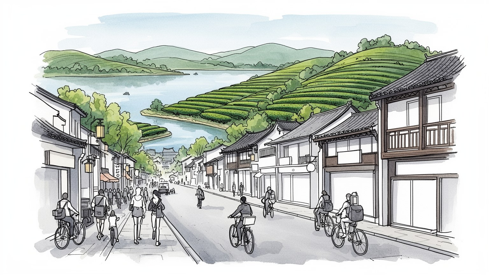
杭州は上海の背後にある長江デルタ南翼の中核で、浙江省の省都として行政、民営企業、大学、観光を束ねます。海港都市ではありませんが、運河、高速鉄道、湾岸産業回廊を通じて内陸と世界市場を結ぶ重要な要衝です。
電子商取引、クラウド、金融技術、物流、観光、茶業、大学研究が雇用を作ります。技術職に加え、配達、倉庫、ホテル、飲食、清掃、警備、茶園、市場、夜市、ライブ配信の現場が都市の便利さを日々支えています。
西湖の詩歌、南宋の都城記憶、霊隠寺、岳王廟、茶礼、寺院の香火が杭州の文化を厚くします。観光の舞台でありながら、祈願、墓参、季節行事、茶を囲む会話が生活の暦として残ります。日常の礼節と地域の記憶も育てます。
来訪者は西湖、運河、寺院、茶畑、宋代遺跡を巡りますが、住民には家賃、通勤、若者の競争、観光混雑、湿気、豪雨、郊外化が日々の条件になります。美しい景観の背後に生活の負担と楽しみも静かに重なる都市です。
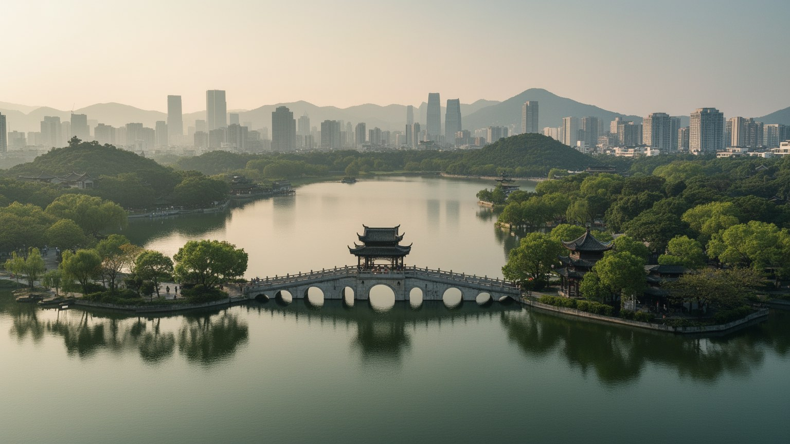
杭州の地理を読む入口は西湖です。湖は単なる観光名所ではなく、都市中心部の成長を受け止め、速度を緩め、視線を広げる大きな公共空間として働きます。北と西には丘陵が迫り、茶畑、寺院、墓地、山道が都市の背後へ伸びています。東側には行政、商業、住宅、高速道路、高速鉄道、銭塘江沿いの新しい業務地区が広がり、古典的な景勝地と現代的な開発が近距離で並びます。蘇堤や白堤の歩行空間、湖畔の柳、橋、島、楼閣は、自然をそのまま残した風景ではなく、長い時間をかけて整えられた都市景観です。杭州では、水面が不動産価値、観光動線、歴史記憶、住民の散歩、祭礼、交通規制まで左右します。湖を守ることは景色を保存するだけではありません。水質、混雑、周辺道路、地下鉄駅、ホテル開発、夜間照明、商業利用をどう調整するかという都市政策でもあります。西湖の静けさは、周辺の強い経済成長と対照をなすからこそ意味を持ちます。湖畔が無料で開かれていることも重要で、杭州の中心には消費しなくても歩ける場所が残ります。その公共性があるから、観光客、近隣の高齢者、子ども連れ、朝のランナー、自転車で湖を回る若者が同じ水辺を共有できます。地理は景色ではなく、都市の公平さを測る条件でもあります。遊覧船の音、湿った霧、秋の桂花の香りを受け止める歩道も、生活に届く調整の場所です。
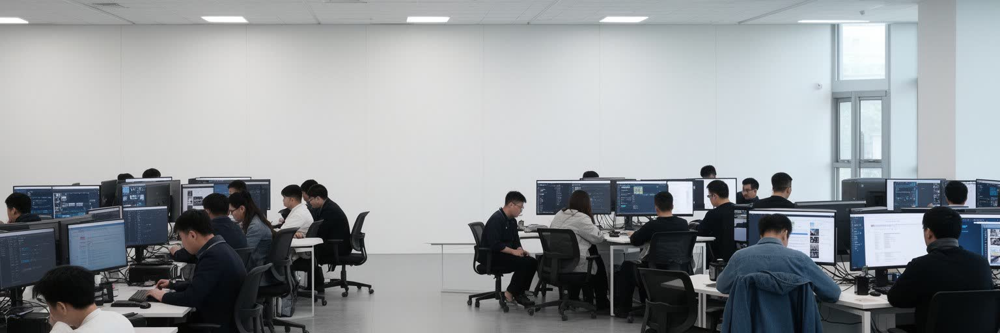
杭州は中国のデジタル経済を語るうえで欠かせない都市になりました。電子商取引、クラウド、決済、物流管理、ライブコマース、金融技術、人工知能、企業向けサービスが、大学、投資、若い労働力と結びつき、都市の雇用と生活を変えています。上海や北京の国家機関、大型金融機関とは違い、杭州の強さは民営企業の成長、試行の速さ、消費者向けサービスの厚さにあります。スマートフォン決済、宅配、配車、食事配達、観光予約、行政手続きは日常の中へ深く入り、便利さは都市の印象そのものになります。一方で、その便利さは膨大なデータ、アルゴリズム管理、長時間労働、成果主義、外注化された配達と倉庫作業によって支えられます。技術職の高収入と、プラットフォームを支える現場労働の不安定さは同じ都市の中で隣り合います。杭州のデジタル経済を評価するには、企業価値やアプリの数だけでなく、働く人の休息、個人情報、若者の競争、規制との関係を見る必要があります。行政もこの産業を都市ブランドとして使い、会議、展示会、起業支援、スマートシティ施策を重ねます。ローカルメディアや配信スタジオは、新商品、観光地、スポーツイベント、夜の飲食を一気に可視化します。ですが技術が生活を便利にするほど、使えない高齢者や低所得者を置き去りにしない設計が重要になります。便利な都市ほど、見えない労働と監視の境界を丁寧に扱う必要があります。
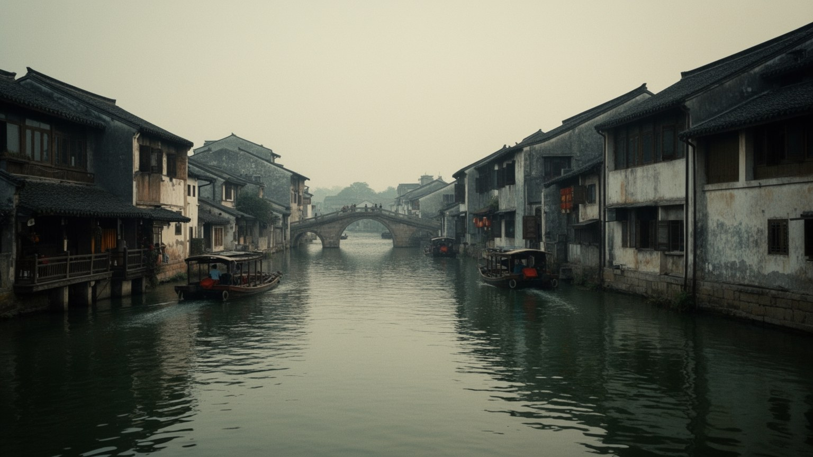
杭州は西湖の都市として知られますが、もう一つの水の軸は京杭大運河です。運河は北京と江南を結んだ巨大な交通インフラで、米、絹、塩、茶、官僚、職人、信仰、情報を運び、杭州を内陸と北方へ開きました。現在の都市物流は高速道路、鉄道、空港、デジタル倉庫へ移りましたが、運河沿いには倉庫、船着き場、工場跡、橋、市場、住宅が残り、物が動く都市の記憶を伝えます。観光化された運河地区では水辺の散策、博物館、夜景、カフェが整備される一方、物流の現場は周辺の産業区や郊外へ押し出されます。ですが電子商取引で注文した商品が素早く届く背景には、仕分け、配送、包装、返品処理、道路交通、倉庫労働があります。運河を見ることは、杭州が美しい景観都市である前に、物資を集めて流す実務の都市だったことを思い出すことでもあります。水路の遺産を単なる装飾にせず、労働と商業の歴史として読めるかが、運河再生の質を決めます。運河沿いの再開発では、古い工場を文化施設へ変える試みもありますが、そこに暮らした労働者や商店の記憶が消えれば、景観は薄くなります。橋の下、荷揚げ場、倉庫の壁、夜の露店、麺や茶を出す小さな店をどう語り継ぐかによって、水辺は観光の背景ではなく都市の歴史資料になります。船のエンジン音や電動バイクのベルにも、運ぶ都市の現在が重なります。
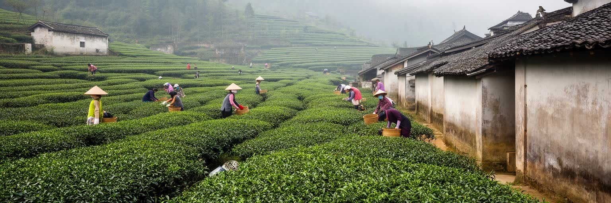
杭州の西側丘陵を歩くと、都市の高層ビルとは違う時間が現れます。龍井茶の茶畑は、ブランド化された特産品であると同時に、土壌、斜面、雨、手摘み、炒り、販売、贈答、観光が結びついた生活の場です。茶は杭州の文化を柔らかく見せますが、その背後には農家の季節労働、価格変動、偽物対策、観光客への接客、土地利用の圧力があります。茶畑の村は、伝統的な農村として固定されているわけではなく、民宿、茶館、土産物店、道路整備、駐車場、都市住民の週末消費によって変化しています。茶を味わう行為は、単なる嗜好ではなく、江南の文人文化、寺院、庭園、贈答、商談、家族の休息とつながります。都市がデジタル経済で加速するほど、茶畑はゆっくりした杭州像を演出しますが、その演出にも労働と市場があります。龍井茶を読むには、湯呑みの香りだけでなく、春の摘採、手作業の技能、斜面の保全、観光交通、農家の収入を見る必要があります。丘陵は都市の余白であり、杭州の名声を支える生産地でもあります。茶館では茶菓子、麺、家族の昼食、学生の小旅行が重なり、店先の呼び込みも小さな路上経済になります。農地を守る規制、若い担い手、直売の仕組み、環境への配慮があって初めて、龍井茶は都市ブランドではなく生きた産業として残ります。茶の丘陵は、成長する都市が何を残すかを問う場所でもあります。
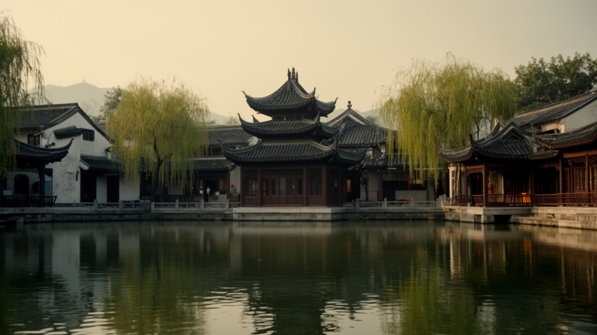
杭州は南宋の都、臨安として栄えた記憶を持ちます。宮城や城壁の多くは失われ、現代の道路、商業施設、住宅の下に埋もれていますが、都市の自意識には都城の記憶が強く残ります。南宋期の杭州は、政治、手工業、出版、飲食、芸能、宗教、庭園、水運が高密度に重なる巨大都市でした。現在の河坊街や御街周辺では、歴史風の商業空間が観光客を集めますが、そこには本物の遺構、復元、演出、土産物、夜の食べ歩きが混じります。遺産を読むとき重要なのは、古い姿をそのまま探すことだけではありません。都市が自分の過去をどのように語り、商業化し、教育し、保存し、忘れているかを見ることです。岳王廟や西湖周辺の物語は、忠義、国家、詩歌、景観美を結びつけ、杭州を単なる経済都市にしません。南宋の記憶は、現代中国の文化政策や観光産業の中で再編されながら、住民の誇りや学校教育にも入り込みます。歴史を商品にすると軽くなる危険がありますが、完全に日常から切り離しても生きた遺産にはなりません。杭州の宋代遺産は、保存と利用の緊張の中で読まれるべきです。都市の地下に残る考古学的な層、地名、廟、料理、演劇、茶館の作法は、観光看板より細かく過去を伝えます。歴史地区を歩くときは、復元された街並みの外側にある住宅、学校、市場、湖浜の商業施設にも目を向けたいです。買い物と学びが隣り合う場所に、古都の記憶が現代生活へ混じります。
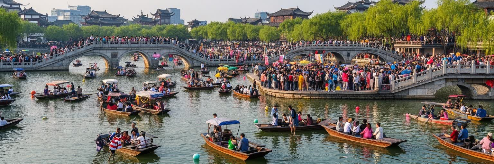
杭州観光の中心は西湖であり、その魅力は水面、山、寺院、堤、季節の花、詩的な地名が近い距離で重なる点にあります。しかし人気が高いほど、都市は混雑の管理を迫られます。連休や週末には湖畔の歩道、地下鉄駅、バス停、駐車場、飲食店、トイレ、写真スポットに人が集中し、住民の移動や静かな休息は圧迫されます。観光収入はホテル、飲食、土産物、交通、文化施設を支えますが、価格上昇、短期滞在向け商業、騒音、ごみ、交通規制も生みます。杭州の課題は、観光客を拒むことではなく、景観の質と住民の日常を両立させることです。水辺を無料で歩ける公共性、歴史的景観を守る規制、多言語案内、混雑時の分散ルート、バリアフリー、夜間の安全は、観光都市の成熟を左右します。観光地としての美しさは、清掃、警備、案内、交通整理、植栽管理、救急対応という見えにくい仕事によって保たれます。杭州を訪れる人が増えるほど、観光は消費の問題ではなく、都市の公共空間を誰がどのように使うかという政治の問題になります。混雑を分散させるには、運河、湿地、茶村、博物館、郊外の歴史地区をつなぐ案内も必要になります。中心だけに人を集める観光は、写真を撮る人にも住む人にも疲れを残します。子ども連れや高齢者が休める日陰、夜市帰りの安全な交通、湖畔イベント後の清掃も、観光の質を左右します。静かな時間と迂回できる選択肢を都市全体で用意することが、名所の魅力を守ります。
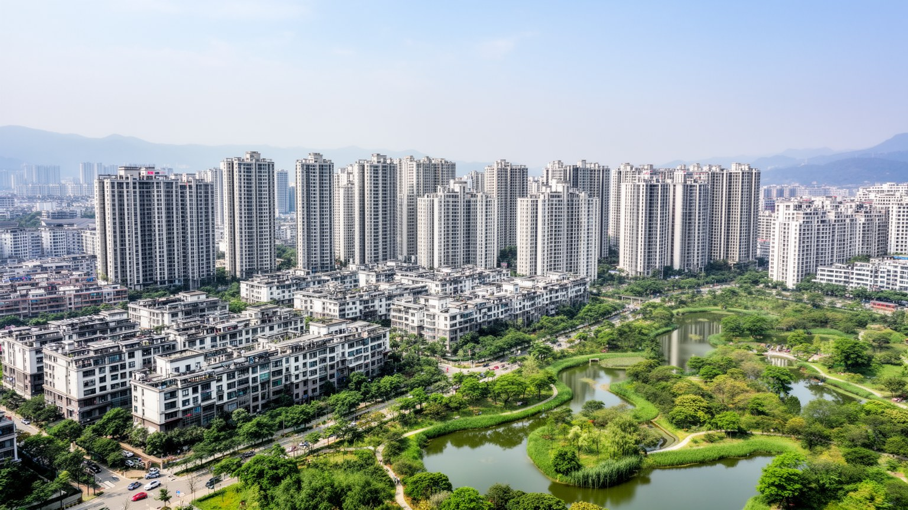
杭州の成長は住宅地の広がりとしても現れます。中心部と西湖周辺は地価が高く、歴史景観や観光の制約もあるため、多くの住民は銭塘江東岸、余杭、蕭山、臨平などの新しい住宅地や地下鉄沿線へ生活圏を広げます。高層マンション、学校、ショッピングモール、病院、公園、幹線道路が一体で整備される一方、職場との距離、通勤時間、保育、地域コミュニティの薄さが課題になります。新しい住宅は設備が整い、若い家族に機会を与えますが、不動産価格の上昇は購入や賃貸の負担を重くします。都市の豊かさが住宅資産へ偏ると、若者、外来労働者、サービス業の従事者は住む場所を選びにくくなります。杭州では、歴史的中心、デジタル産業地区、大学城、物流拠点、郊外住宅地が地下鉄と高速道路で結ばれ、都市の形が多中心化しています。住宅問題は部屋の広さだけでなく、駅までの距離、教育資源、戸籍制度、医療、災害時の安全、近所のつながりまで含みます。郊外化を成功させるには、住むだけの団地ではなく、働き、学び、買い物し、老いることができる生活都市を作る必要があります。駅前のモール、湖浜の商業施設、地域市場は便利さを作りますが、小さな店や夜の屋台が消えると生活の表情は薄くなります。古い中心部では路地の関係が残る一方、家賃と観光化が住民を押し出します。住宅政策は、普通の労働者が都市に残れるかを問われています。
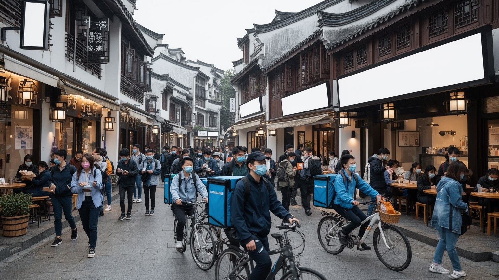
杭州は若い人にとって機会の多い都市です。大学、スタートアップ、デジタル企業、デザイン、ライブ配信、観光、飲食、教育サービスが、新しい仕事と移住の理由を作ります。地方から来た学生や技術者は、上海や北京より少し柔らかい生活環境と、成長産業に近い仕事を求めて杭州を選ぶことがあります。しかし機会の多さは競争の強さでもあります。長時間労働、成果評価、短い契約、家賃、通勤、転職圧力、親への仕送り、結婚や住宅購入への期待が、若者の日常を重くします。プラットフォーム経済は柔軟な働き方を広げましたが、配達員、ライブコマースの運営、倉庫作業、カスタマーサービスには不規則な時間と強い管理があります。高学歴の技術職と、都市サービスを支える現場労働は同じアプリ経済の中で結びつきますが、報酬と将来の安定は大きく違います。杭州を若い都市として見るなら、カフェやオフィスの明るさだけでなく、夜遅くの帰宅、面接を繰り返す不安、家賃を抑えるための遠い住まいも見る必要があります。大学城では学生のバスケットボール、ライブハウス、書店、夜食の店が文化の入口になり、西湖周辺のサッカー観戦やランニングも余暇を支えます。学園祭や地域の小劇場も、学生の発表の場になります。働く人が休み、学び直し、家族や友人と過ごせる時間を持てるかが、成長都市の持続性を測ります。
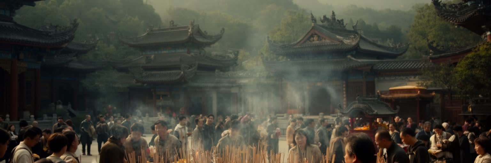
杭州の宗教生活は、西湖周辺の景勝と深く結びついています。霊隠寺、飛来峰、岳王廟、道教的な祠、墓地、季節の参拝は、観光コースであると同時に、祈願、供養、家族の記憶、地域の暦を支える場所です。寺院の香火は写真を撮る対象ではなく、受験、健康、商売、先祖への思いを持つ人の身体的な行為として残ります。杭州では、山、水、寺、茶が近く、信仰は都市の端ではなく、散歩や観光の動線に入り込んでいます。宗教施設は歴史遺産であるだけでなく、清掃、警備、僧侶、売店、案内、交通整理、寄付、儀礼用品の小さな経済を伴います。春節や初詣の時期には家族連れ、学生、高齢者が参道に集まり、香、菓子、茶、線香売りの声が朝の湿気に混じります。観光客が増えると、静けさは失われやすく、参拝者と見物客の境界も曖昧になります。宗教を都市の中で守るには、建物の保存だけでなく、祈る時間、礼拝の作法、騒音、混雑、商業化への配慮が必要になります。杭州の信仰を読むことは、近代的なデジタル都市の中に、身体を動かして香をたき、石段を上り、水辺を歩き、先人を思う時間が残っていることを読むことです。若い人も試験、就職、起業、恋愛、健康の不安を抱えて寺院を訪れます。合理的な経済都市の中で、言葉にしにくい願いを置ける場所があることは、精神的な公共空間として意味を持ちます。参道の店や茶屋も、祈りの前後に人が気持ちを整える場所になっています。
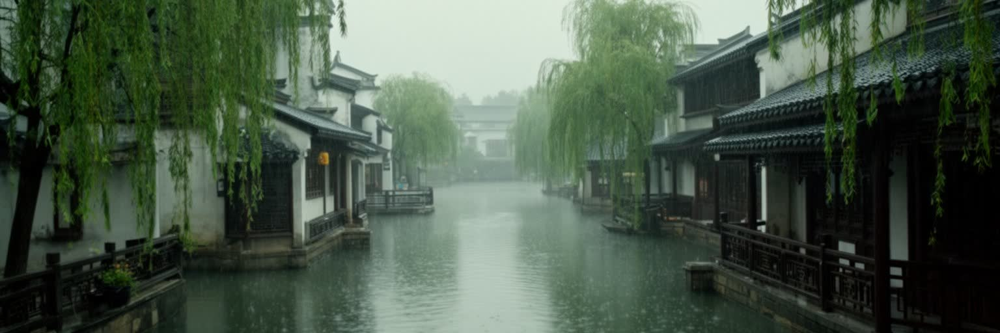
杭州の気候は、温暖で湿潤な江南の印象を与えます。春の雨、梅雨、蒸し暑い夏、台風の影響、秋の涼しさ、冬の冷え込みがあり、水辺の美しさは湿気と豪雨のリスクと切り離せません。西湖、運河、銭塘江、湿地、丘陵の谷は景観資源である一方、排水、斜面災害、河川管理、地下空間の安全を考える必要があります。都市が高密度化し、地下鉄、地下商業施設、駐車場、トンネルが増えるほど、短時間豪雨への脆弱性は高まります。夏の暑さは、観光客、屋外労働者、配達員、高齢者、学校に負担をかけ、エアコンの使用と電力需要を押し上げます。水を愛でる都市は、水を制御する都市でもなければなりません。緑地、透水性舗装、河川の余地、避難情報、地下施設の止水、丘陵の保全は、景観整備ではなく生活の安全です。杭州の水害対策を読むと、美しい湖畔の裏側で、行政、技術者、清掃、警備、住民が日常的に水と交渉していることが分かります。気候変動が進むほど、この交渉はさらに重要になります。水辺の都市では、涼しさや情緒を求める開発が、逆に浸水しやすい土地へ人を集めることもあります。雨上がりの石畳、湖面の霧、茶葉の湿った香り、秋の桂花は杭州らしさを作りますが、同じ湿気は通勤、屋台、地下街の安全にも影響します。美しい水の都市であるほど、見えない防災の質が暮らしを守ります。
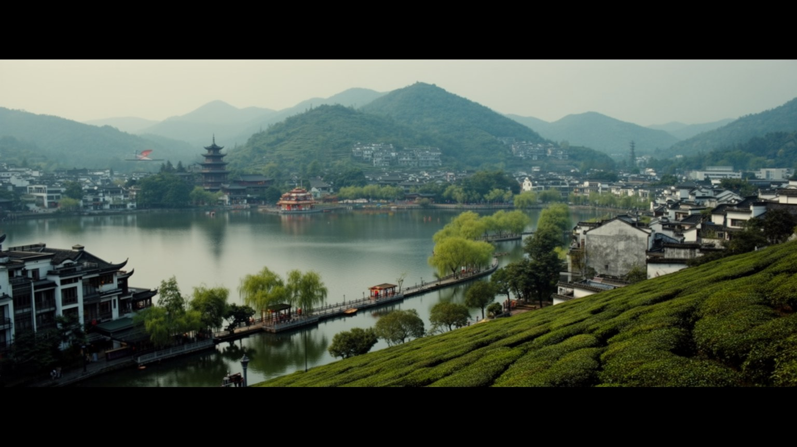
杭州を一つの言葉で説明するなら、美しい水辺のデジタル都市という表現が浮かびます。しかし実際の杭州は、西湖の詩的景観、京杭大運河の物流記憶、南宋の都城遺産、龍井茶の丘陵、霊隠寺の祈り、電子商取引のオフィス、郊外住宅、若者の労働、観光混雑、湿潤な気候が同時に重なる複雑な都市です。上海に近い長江デルタの一員でありながら、杭州は海港や金融首都の強さではなく、民営企業、文化景観、生活環境、技術サービスを組み合わせて存在感を作ってきました。観光客は湖畔の穏やかさを記憶しますが、住民は通勤、家賃、競争、豪雨、教育、医療、郊外化を通じて都市を経験します。杭州の価値は、古典的な美しさを保存している点だけではありません。その美しさを、現代の産業、労働、住宅、宗教、気候リスクとどう折り合わせるかにあります。湖と茶畑が都市の速度を和らげ、デジタル経済が都市を加速させます。サッカーやバスケットボールを見る夜、河坊街の買い物、茶館の会話、地下鉄の案内音、配達員の電動バイクも同じ都市の一部です。都市の成功は、企業の成長や観光客数だけでは測れません。公共空間が開かれ、若者が消耗しすぎず、茶畑と運河の記憶が残り、水害に備えられるかが問われます。杭州は伝統と未来を並べる都市ではなく、その二つが毎日の通勤、散歩、商売、祈りの中で衝突しながら調整される都市です。